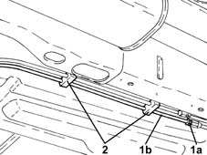
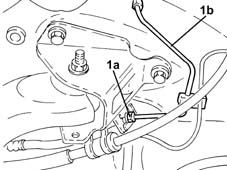
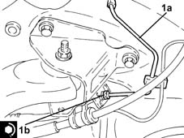
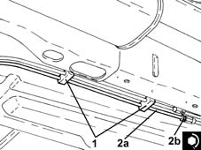

3340B74 RIGID PIPE from connector to rear brakes . (one), left or right - R.R.
- Path
- Procedures > 33 BRAKING SYSTEM > 3340 A(B.S. ANTI-LOCK BRAKING SYSTEM .) > 3340B abs system pipes > 3340B74 RIGID PIPE from connector to rear brakes . (one), left or right - R.R.
- Kind
- repair procedure (removal / refitting; the operation number is the code)
- Applies to
- all engines; all production periods
- Interactive page
- https://sloeber94.github.io/elrnDB-lYpsln/en/#/2429201
Applies to: all engines; all production periods
 Removing
Removing
 Refitting
RefittingPosition the vehicle on the ramp.
Remove the protective cap on the rear brake shoe control cylinder
Connect the collection system (pipe and reservoir) to the bleed valve on the rear brake shoe control cylinder.
Loosen the bleed valve on the rear brake shoe control cylinder and wait for the brake-clutch reservoir and pipes to drain.
Proceed with removal 1040A70 submerged pump assembly complete with level guage control - r + r .
Proceed with removal 7040L22 REAR TRIM on TUNNEL -R.R. .
Proceed with removal 4450B08 right rear wheel r r .
Proceed with removal 7055B45 right hand rear supplementary wheel arch - r+r .
Proceed with removal 1040A10 fuel tank - r + r and decant fuel .
1. Undo the connector (1a) and disconnect the rigid pipe from the connector to the right rear brake (1b), rigid pipe from control unit side.
2. Release the rigid pipe from the connector to the rear brakes from the attachments on the underbody.

Applies to: all engines; all production periods
1. Undo the connector (1a) and disconnect the rigid pipe from the connector to the rear brakes (1b), hose side and remove.

Applies to: all engines; all production periods
Refitting
Removing1. Refit the rigid pipe from connector to rear brakes (1a), connect to the hose and tighten the connector (1b) to the recommended torque.
 | Fastening | Component | Ø | Value (daNm) |
|---|---|---|---|---|
1b | Connector | RIGID PIPE FROM CONNECTORS TO REAR BRAKES. | - | (Flexible pipe side) 1.4 ÷ 1.8 |

Applies to: all engines; all production periods
1. Fix the rigid pipe from the connector to the rear brakes using the underbody fastenings.
2. Connect the rigid pipe from the connector to the rear brakes (2a), rigid pipe from control unit side, and tighten the connector (2b) to the recommended torque.
| Fastening | Component | Ø | Value (daNm) |
|---|---|---|---|---|
2b | Connector | RIGID PIPE FROM CONNECTORS TO REAR BRAKES. | - | (Pipe from control unit side) 1.4 ÷ 1.8 |

Applies to: all engines; all production periods
Proceed with refitting 1040A10 fuel tank - r + r and decant fuel .
Proceed with refitting 7055B45 right hand rear supplementary wheel arch - r+r .
Proceed with refitting 4450B08 right rear wheel r r .
Proceed with refitting 3380A04 handbrake - check travel .
Proceed with refitting 7040L22 REAR TRIM on TUNNEL -R.R. .
Proceed with refitting 1040A70 submerged pump assembly complete with level guage control - r + r .
Proceed with refitting 0010T64 brake and or clutch fluid check level and top up as necessary .
Proceed with refitting 0010T65 hydraulic brake system bleed air .
Remove the car from the ramps.
Topics linked from this page (8)
- 0010T64 brake and or clutch fluid check level and top up as necessary
- 0010T65 hydraulic brake system bleed air
- 1040A10 fuel tank - r + r and decant fuel
- 1040A70 submerged pump assembly complete with level guage control - r + r
- 3380A04 handbrake - check travel
- 4450B08 right rear wheel r r
- 7040L22 REAR TRIM on TUNNEL -R.R.
- 7055B45 right hand rear supplementary wheel arch - r+r